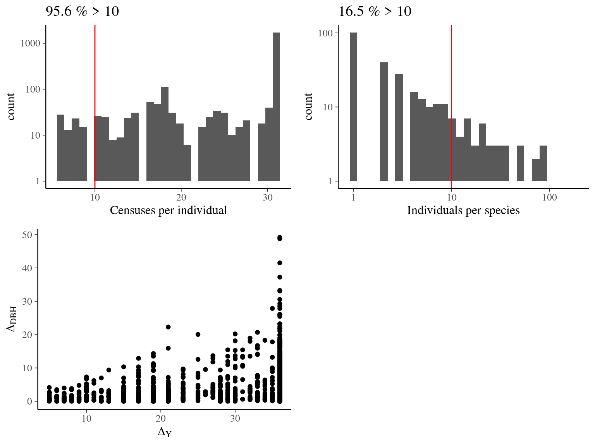

This book is in Open Review. I want your feedback to make the book better for you and other readers. To add your annotation, select some text and then click the on the pop-up menu. To see the annotations of others, click the in the upper right hand corner of the page
Chapter 1 Reduced data
To define the models we first worked on a reduced dataset.
We used the full Guyafor database that we recoded in SQL for faster quesry using dbplyr.
We focused on the variation in diameter of trees across censuses in the plot 6 of individuals >20m from an edge to avoid edge effect in the neighbourhood crowding index.
We chose to keep individuals with at least 10 censuses and species with at least 10 individuals (Fig. ??).
To gain time, we further reduced the dataset (Tab 1.1).

Figure 1.1: Caption.
| N | |
|---|---|
| individuals | 187 |
| species | 3 |
| genus | 3 |
| family | 3 |
| years | 37 |